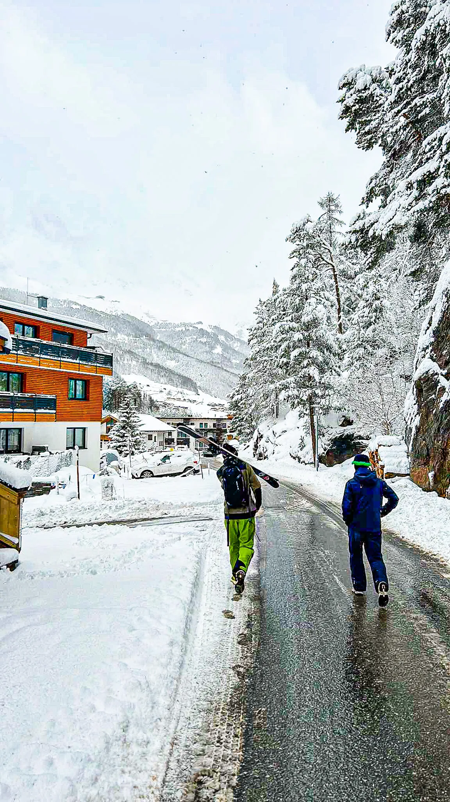
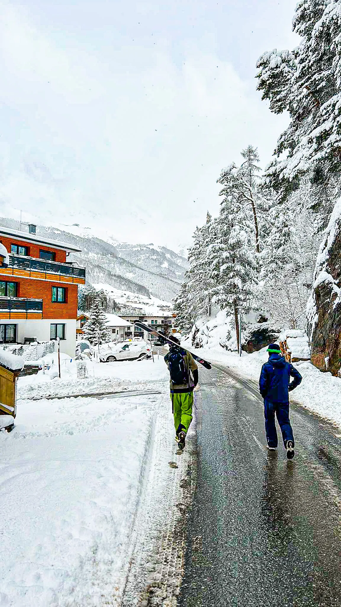
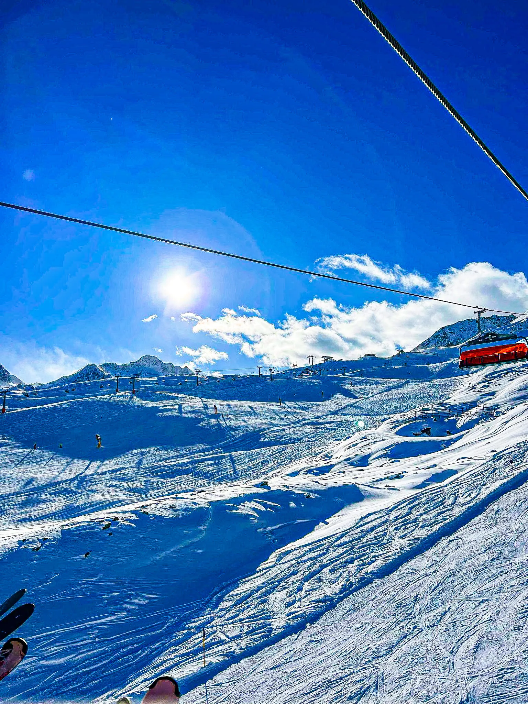
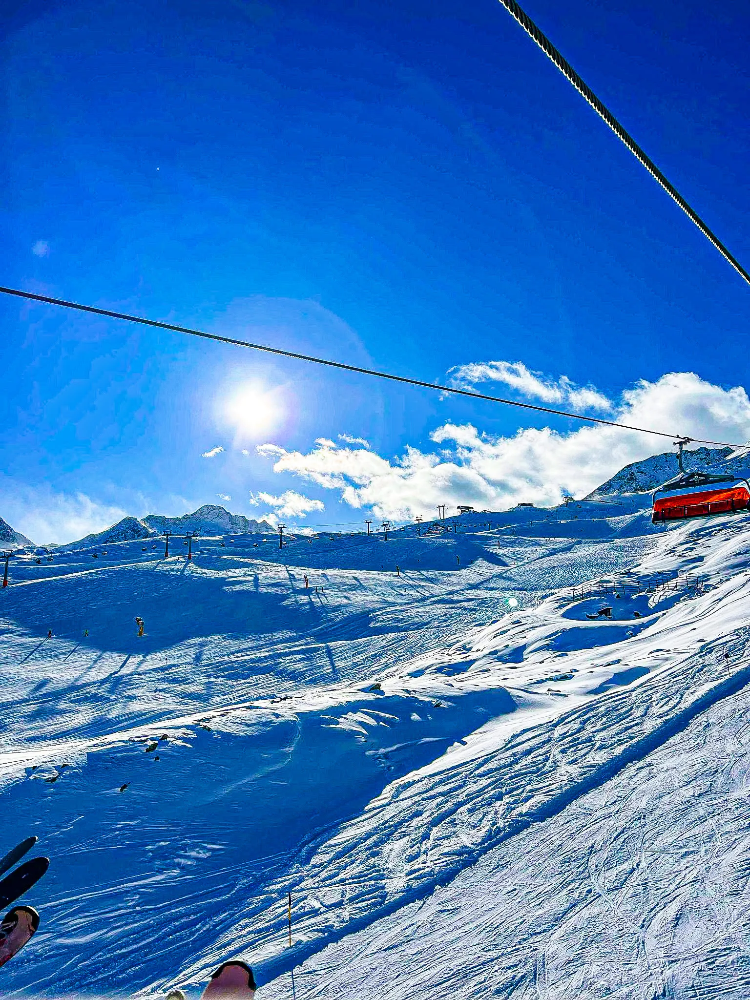

Passion for ski
En helt unik oplevelse
At stå på ski er en helt unik oplevelse, fordi det kombinerer fart, frihed og naturoplevelser på en måde, der sjældent opleves andre steder. Når du suser ned ad bjergsiden, mærker du vinden i ansigtet og den friske, kolde luft, der fylder dine lunger. Landskabet omkring dig er ofte storslået, dækket af sne og badet i sollys eller mystisk tåge. Samtidig kræver skiløb koncentration og balance, hvilket giver en følelse af fokus og flow, der får alt andet til at forsvinde. Det er en følelse af at være ét med naturen og samtidig overvinde den – en oplevelse, der er lige så spændende som den er fredfyldt.
Super fed sport
Billeder
 

 
